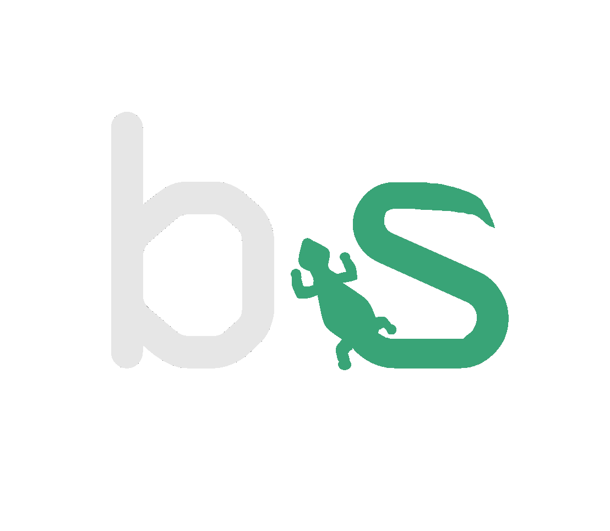
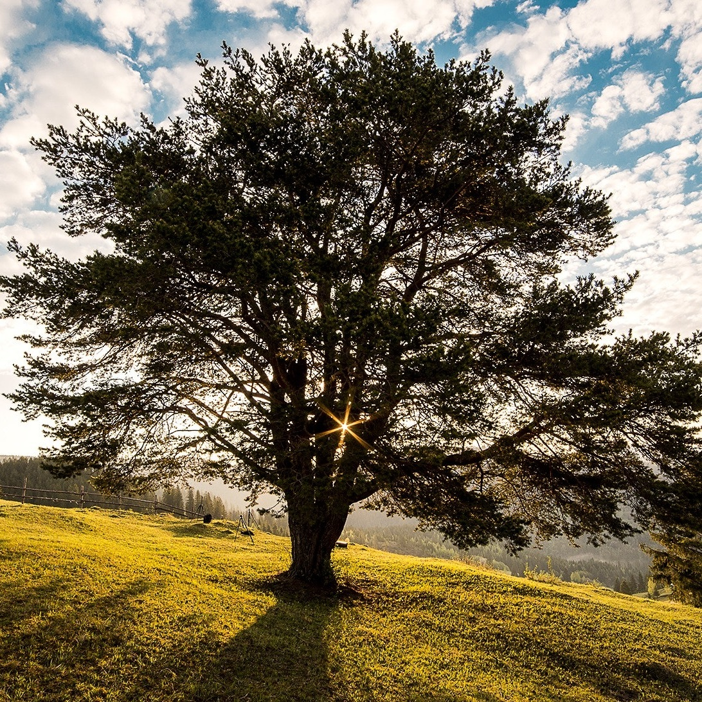

<div class="about">
    <div class="about-page">
        <div class="about-container">
            
            <div class="top">
                
                <h1>about me</h1>
            </div>
            
            <p class="p1">
                I realized the amazing potential of programming in 2011 when one of my best friends helped me develop my first project on a Saturday night.
                After that, getting a degree in Computer Science was an obvious choice.
                Now I learn a variety of technologies and skills by constantly working on projects outside of work as well as
                on enterprise financial service web applications at my job at IHS Markit.
                My favorite projects are web apps because of the design potential and ease of access to make life easier for my self and others.
                When my life was changed in 2017 by the grace of Jesus Christ I was motivated to begin looking for ways to use my skills to help others, 
                and web development seemed like one of the most practical paths.
                My mission is to develop with transparency and integrity.
                <br>
            </p>

            <div class="mid">
                <div class="mid-left">
                    
                </div>
                
                <div class="mid-right">
                    <p class="p2"> 
                        <br>
                        Outside of programming, I enjoy spending time with my loving wife and our loyal dog. 
                        We were both born and raised in Texas, where we still live now.
                        We love taking our dog for walks, going on hikes, and spending time with friends and family. 
                        Some of my hobbies include Programming of course, all kinds of Sports, Video Games, Volunteering, and occasionally helping with A/V Event Production.
                    </p>
                    
                </div>
            </div>
            
            
            <div class="bot">
                <div class="hobbies">
                        
                        
                        
                        
                    </div>
                    <div class="icons">
                <i class="material-icons">
                    pets
                </i>
                <i class="material-icons">
                    favorite
                </i>
                <i class="material-icons">
                    sports_esports
                </i>
                <i class="material-icons">
                    sports_golf
                </i>
                <i class="cross">
                    <div class="vert"></div>
                    <div class="horz"></div>
                </i>
            </div>
            </div>
    </div>
    </div>
</div>